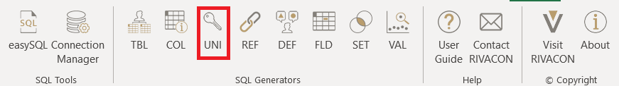
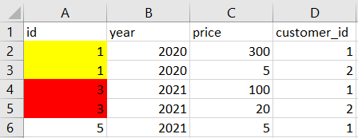
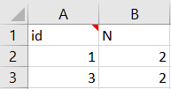
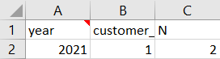
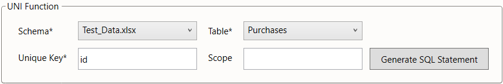
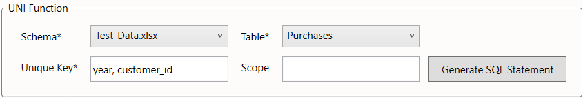

UNI
The UNI generator generates a SQL query which detects uniqueness violations when executed. That means it detects instances, where an attribute in one table is not unique although it should be.
The UNI generator may be used directly as a worksheet function =UNI().
Rather than doing this, we suggest using the UNI dialog from the menu bar, especially when using this function for the first time.

Figure 1: location of the UNI ribbon
Example 1
Consider the database of a retailer with two entities: purchases and customers.
An attribute of each purchase is the id, which should serve as a unique identifier.
Hence, using the same value for multiple data records in the table violates the uniqueness of this attribute.
This is demonstrated in the below example. We see, that the ids 1 and 3 have been assigned repeatedly.

Table 1: Purchases
We may check the uniqueness of an attribute for an entire table or a defined subset thereof.
For instance, in the above example, we may only care about purchases made in 2021.
The UNI framework can account for that via the scope parameter and limit the search for violations to that scope.
As a result, only the reference to the customer with ID = 3 would be reported.

Table 2: Executed UNI generator for Example 1 without further scope restrictions
Example 2
We have now seen, how to identify the violation of key uniqueness, if the unique key only consists of one attribute.
The UNI generator can also be used to find duplicate data records for composite keys.
Consider the database from Example 1. This time, we would like to know, if any customer made multiple purchases within the same year.
So we have to check, whether there are multiple entries, that have matching attributes year and customer_id.
As we can see in the purchases table, customer 1 made two purchases in 2021.
Executing the generated query brings the following result:

Table 3: Executed UNI generator for Example 2
Settings
The UNI generator has four input parameters. The table is defined by two parameters:
- the
schema
(providing for databases where identically named tables may exist in different schemas) - the
table
The third parameter specifies the attribute, that is supposed to be checked for uniqueness:
- the
unique keyis a single attribute or a composition of multiple attributes of the table, that we would like to check for uniqueness
Composite keys can be chosen by separating every attribute with a comma. The fourth parameter defines the scope, i.e. the subset of the table to be included in the check:
- the
scopedefines the subset of the referencing table to be included in the check
The scope is specified in the syntax of an SQL where clause.
It is an optional parameter. When left blank, the scope is the entire table.
In the below screenshot, we illustrate how the parameters would be chosen to implement the example check described above.
We assume, that the data is stored in an Excel workbook "Test_Data.xlsx" with purchases stored in the worksheet Purchases.

Figure 2: UNI settings for Example 1

Figure 3: UNI settings for Example 2
Additional unique key settings
The UNI framework also allows you to check whole data records, i.e. a complete row in a data table, for uniqueness. To achieve this, instead of having to enter every table column as part of the composite key, we implemented a shortcut.
*checks for duplicate table records (over all columns of the table)
When using either PostgreSQL, SQLServer, Oracle, or DB2, further commands can be used.
To run a check on a list of possible composite keys, you can use the ? shortcut. The input may look like this:
COL1, COL2, ... ?checks all combinations of the columnsCOLjfor uniquenessFIX1, FIX2, ... + SUP1, SUP2, ...checks all combinations of fixed columnsFIXjand supplementary columnsSUPj, that contain every fixed column. For example,FIX1, FIX2 + SUP1, SUP2will check the combinationsFIX1, FIX2FIX1, FIX2, SUP1FIX1, FIX2, SUP2FIX1, FIX2, SUP1, SUP2
Leaving out the supplementary columns lets UNI interpret every non-fixed column as supplementary.
So if FIX1, FIX2, SUP1, SUP2 is the complete list of a table's columns, then the expression FIX1, FIX2 + would be a shortcut for FIX1, FIX2 + SUP1, SUP2.
*?checks every possible combination of attributes for duplicates
Please note that the result set will be empty if no uniqueness violations are detected.